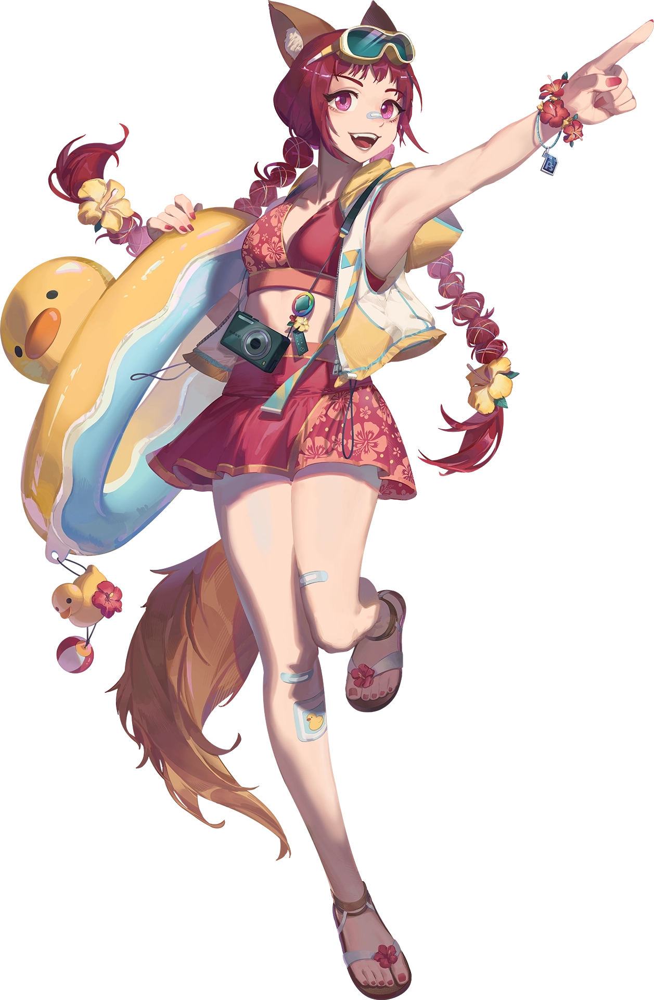
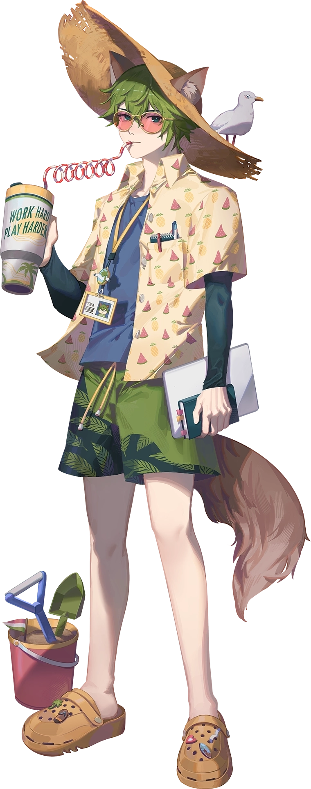
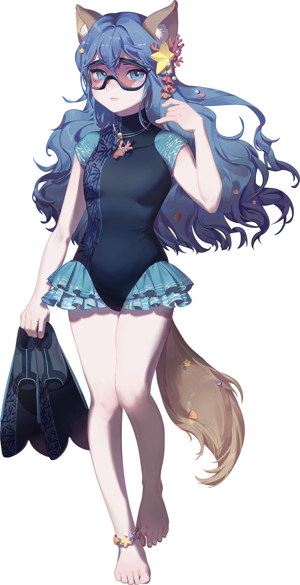
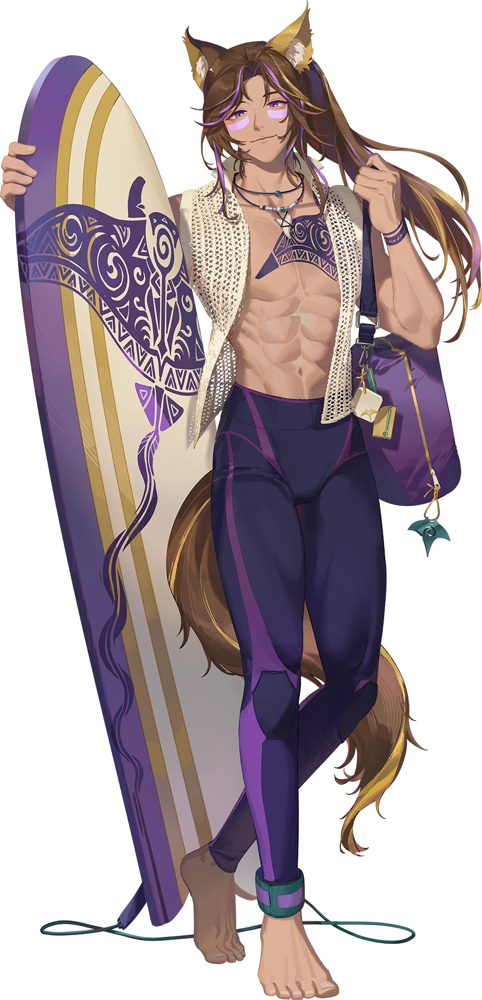
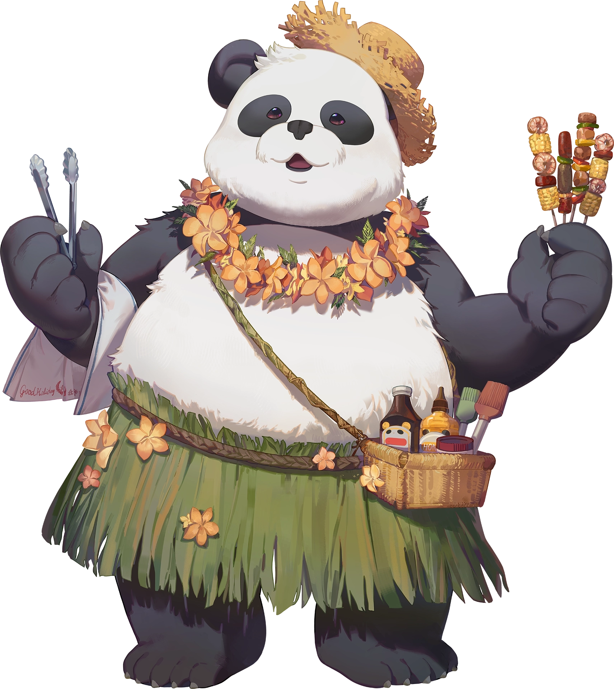

SUN, SEA, AND SURF
Character Design by Clivef梨子
Coffy
Free-spirited Mangaka // Tourist
Escaping the grueling demands of manga serialisations, Coffy, the free-spirited mangaka (comic artist), traded her drawing tablet for a one-way ticket to Fiesta Island's sunny shores. She is on a mission to leave her deadline stress behind and party from sunrise to sunset. By embodying the untamed spirit of the resort, she is always the first to dive headfirst into the beachside fun without a single care in the world!


Tea
Stressed-out Editor // Tourist
Tasked with dragging Coffy back to her drawing board before her hiatus ruins everything, Tea, the chronically-stressed editor, chases her all the way to Fiesta Island's sunny shores. Behind his stable facade lies an overworked soul desperately in need of a break, slowly surrendering to the paradise vibes. What started as an emergency rescue mission quickly turns into the sun-soaked holiday he never knew he needed!
Mi
Cute-tsundere Islander // Pearl Diver
As a local pearl diver who spends her free time exploring the depths of Fiesta Island's ocean, Mi initially greets outsiders with a cold, distant glare. Beneath her chilly exterior and fierce distrust of tourists lies a surprisingly cute heart that simply prefers the quiet beauty of the sea to noisy crowds. With Coffy's relentless enthusiasm and Tea's clumsy presence, it won't be long before this sharp-tongued free-diver warms up to the duo, showing them the true, hidden wonders of her paradise home.


Yin Yong
Hot-looking Islander // Surfer
Gliding across Fiesta Island's turquoise waves, Yin Yong is an effortlessly fabulous surfer who lives for the high of catching the next big wave. Though he carries himself with refined taste and a show-off charm, behind those picture-perfect smirks lies a total airhead who constantly stumbles into wonderfully awkward moments. Luckily for him, every absent-minded mistake is instantly forgiven with his charming personality!
Michael
Big-friendly Islander // Tour Guide
Michael is Fiesta Island's local tour guide and owns many of the island's favorite spots. Though he rarely speaks a word, his warm, beaming presence exudes pure hospitality, making every visitor feel instantly welcomed to paradise. Whether he is silently offering a refreshing drink or guiding lost tourists to the best beach views, his quiet kindness speaks louder than words, ensuring that everyone who steps onto the island finds their own slice of relaxation and joy.
